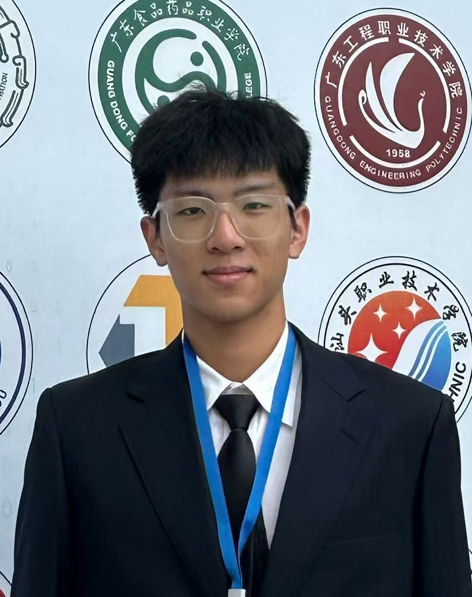 |
Wenli Wu (吴文隶) Currently pursuing a bachelor's degree in engineering |
Biography |
|
I am a current student in the Internet of Things Engineering program at the School of Data Science and Engineering, South China Normal University, where I am pursuing a Bachelor of Engineering degree. My research interests include 3D world reconstruction and representation, visual object perception, and image processing. I am also a Research Assistant at RI-Lab, South China Normal University, advised by Prof. Xiaoyu Tang. |
News |
|
[05/2026] Hired as a Research Assistant at RI-Lab SCNU [03/2026] One paper accepted to IEEE Journal of Oceanic Engineering [03/2026] Awarded National Top 20 in "Qingke Cup" Digital & Intelligent Ocean Special Competition [12/2025] Awarded University Level Silver Medal in The 15th "Challenge Cup" China College Students' Entrepreneurship Competition [12/2025] One paper accepted to ICIST 2025 [10/2025] Awarded Provincial First Prize in Contemporary Undergraduate Mathematical Contest in Modeling (CUMCM) [09/2025] One paper accepted to IEEE Sensors Journal [08/2025] Awarded Provincial Silver Medal in China International College Students' Innovation Competition [05/2025] Awarded Provincial First Prize in The 18th "Challenge Cup" National College Extracurricular Academic S&T Competition [03/2025] One paper accepted to RCAR 2025 |
Selected Recent Publications |
#: equal contribution, *: corresponding author
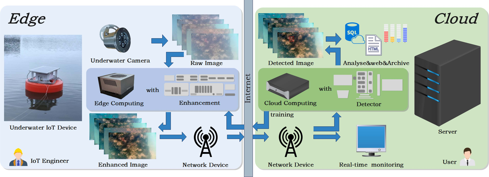 |
Real-Time Underwater Visual Target Sensing System With Multitasking via Edge-Cloud Collaboration Wenli Wu*, Xiaoning Huang, Bohuan Xue, Xiaoyu Tang IEEE Journal of Oceanic Engineering |
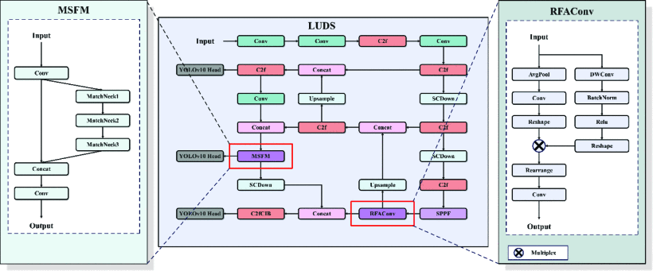 |
High-Precision UAV Detection via Enhanced Feature-Aware Models Yang Yu; Xiaodan Huang; Wenli Wu*; Bohuan Xue; Xiangguang Dai ICIST 2025 |
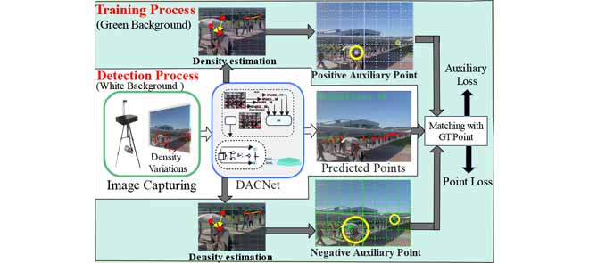 |
DACNet: A Density-Adaptive Counting Network for Real-World Crowd Analysis Without Overhead Jianping Yue; Bohuan Xue; Wenli Wu*; Rui Fan; Xiaoyu Tang IEEE Sensors Journal |
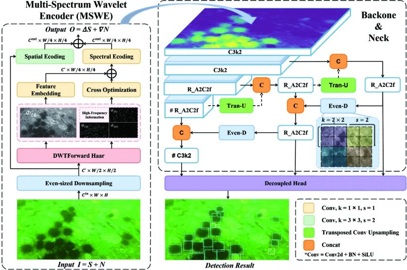 |
You Sense Only Once Beneath: Ultra-Light Real-Time Underwater Object Detection Jun Dong; Wenli Wu*; Jintao Cheng; Xiaoyu Tang IEEE RCAR 2025 |
Research Projects |
|
National College Students' Innovation and Entrepreneurship Training Program, Project Leader, 2025–2026
Guangdong "Climbing Program" Student S&T Innovation Cultivation Fund, Member, 2025–2027
South China Normal University "Golden Seed" Key Extracurricular Research Project, Core Member, 2025–2026
Shanwei Municipal Philosophy and Social Science Research Project, Member, 2025–2026
South China Normal University "Golden Seed" Key Extracurricular Research Project, Member, 2024–2025 |
Patents |
|
An Antenna Recognition Method Based on a Drone-Edge-Cloud Collaboration Model
Image-based pest detection methods, devices, and computer systems |
Project |
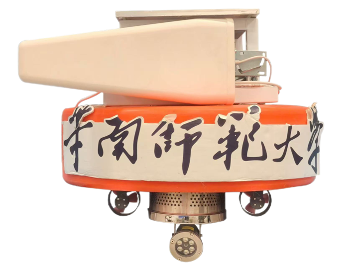 |
A Fully Automated Integrated Water Monitoring Platform Based on 5G and AI with Edge-to-Cloud Collaboration By integrating 5G technology with multiple deep learning algorithms and leveraging an edge-to-cloud collaborative framework, the system enables precise monitoring of water quality and the status of underwater organisms, while supporting route planning and autonomous navigation. As of July 2025, five field deployments have been completed.
My Role: |
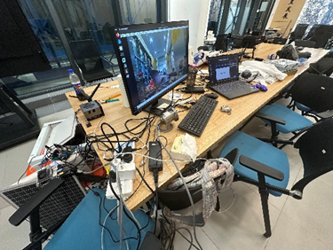
Developed in the laboratory
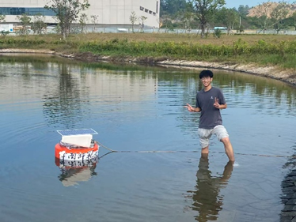
Testing at the campus artificial lake
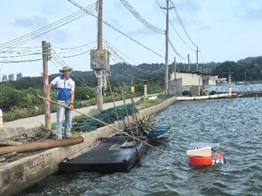
Serving individual farmers
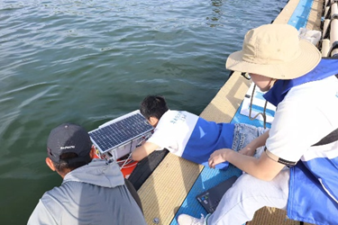
Serving Marine Aquaculture Cages
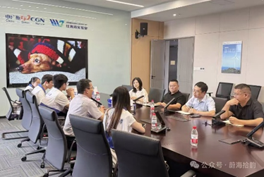
Discussions with the CGN Laboratory
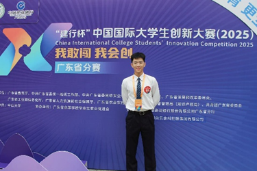
Win an award in competitions
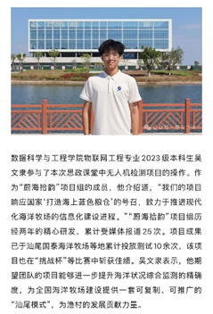
I was featured in the school's official medias
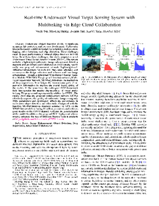
The core technology has been published in a paper
Awards:
National Top 20 | "Qingke Cup" Digital & Intelligent Ocean Special Competition
First Prize, Guangdong Province | The 18th "Challenge Cup" National College Extracurricular Academic S&T Competition
Silver Medal, Guangdong Province | China International College Students' Innovation Competition
Silver Medal, University Level | The 15th "Challenge Cup" China College Students' Entrepreneurship Competition
Flagship Project, Guangdong Province | "Hundred Counties, Thousand Towns and Ten Thousand Villages" Project Commando Action
Media Coverage(Top 5):
Coverage #1,
Coverage #2,
Coverage #3,
Coverage #4,
Coverage #5
Competitions |
|
Contemporary Undergraduate Mathematical Contest in Modeling (CUMCM)
South China Normal University Software Design Competition |
Honors & Awards |
|
First Prize of Comprehensive Scholarship, South China Normal University, 2025 Academic Progress Award, Xingzhi College, South China Normal University, 2025 Outstanding Individual, "Hundred Counties, Thousand Towns and Ten Thousand Villages" Project Commando Action, South China Normal University, 2025 Excellence Award, National Youth Guitar Performance Invitational Competition, 2024 Level II Public Marathon Certificate, Chinese Athletics Association, 2025 Outstanding Member, Art Troupe, Xingzhi College, South China Normal University, 2025 |
© Wenli Wu | Last updated: Feb 2026. |